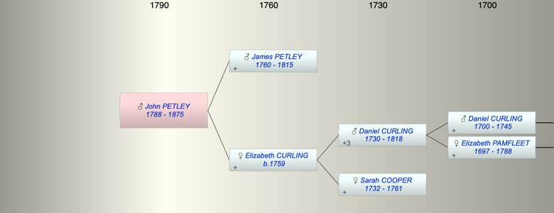

| [Index] |
| John PETLEY (1788 - 1875) |
|  |
| b. 1788 |
| d. 1875 aged 87 |
| Parents: |
| James PETLEY (1760 - 1815) |
| Elizabeth CURLING (1759 - ) |
| Siblings (4): |
| Ann Cooper PETLEY (1784 - 1847) |
| Mary PETLEY (1787 - 1834) |
| John PETLEY (1788 - 1875) |
| WIlliam PETLEY (1789 - ) |
| Events in John PETLEY (1788 - 1875)'s life | |||||
| Date | Age | Event | Place | Notes | Src |
| 1788 | John PETLEY was born | ||||
| 1815 | 27 | Death of father James PETLEY (aged 55) | ex will | ||
| 1875 | 87 | John PETLEY died | |||
| Created on a Mac™ using iFamily for Mac™ on 8 Oct 2023 |